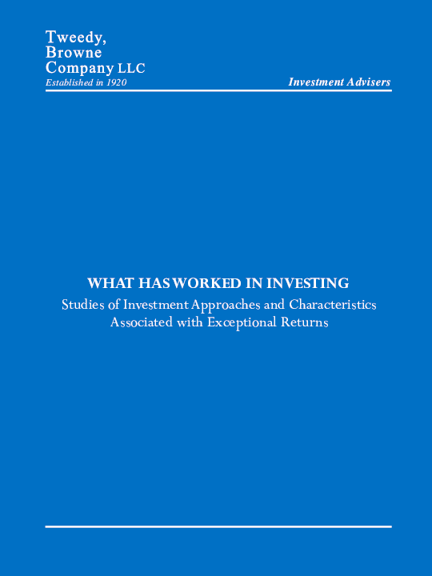

特威迪-布朗公司（Tweedy, Browne Company LLC）成立于1920年，是华尔街历史最悠久的价值投资机构之一。公司早年在纽约百老汇52号办公，与本杰明·格雷厄姆（Benjamin Graham）同处一栋大楼，格雷厄姆在买卖"净净值"股票时常通过特威迪-布朗进行交易。此后，公司一直秉承格雷厄姆的价值投资传统。《投资中什么有效》首次发表于1992年，2009年更新修订，是特威迪-布朗向投资者免费发放的一本研究手册，全文约六十页，汇编并分析了五十多项关于投资方法和策略的学术研究。
这本手册的核心内容是对价值投资有效性的实证论证。特威迪-布朗梳理了数十年间发表在学术期刊上的研究成果，得出结论：具备以下特征的股票在历史上持续产生了优于市场的回报——低市净率、低市盈率、低市现率、高股息率、股价大幅下跌后的反弹、小市值，以及公司内部人（董事和高管）大量买入自家股票。手册还专门考察了本杰明·格雷厄姆的"净营运资本法"（即以低于净流动资产的价格买入股票），并发现这一策略同样产生了强劲的回报。值得注意的是，这些结论不仅基于美国市场的数据，还涵盖了全球多个市场的研究结果，增强了其普适性。
威廉·伯恩斯坦（William Bernstein）在其"高效前沿"推荐书单中评价道："这是一份低调的基金推销材料，但同时也是我见过的支持价值投资方法的最佳数据汇编。"（A low-key sales pitch for their funds, it is also the best compilation I've seen of the data supporting the value method.）投资网站"收购者的倍数"（The Acquirer's Multiple）则直接称其为"有史以来关于投资中什么有效的最佳论文"。
作为一份免费发放的研究手册，《投资中什么有效》没有华丽的辞藻或讲故事的技巧，但它用严谨的学术证据回答了投资者最关心的一个问题：长期来看，哪些可量化的投资标准确实有效？对于认同用数据说话、追求基于证据的投资方法的读者，这份篇幅不长却信息密度极高的手册是理解价值投资实证基础的最佳起点之一。特威迪-布朗至今仍在其网站上免费提供该手册的PDF版本。